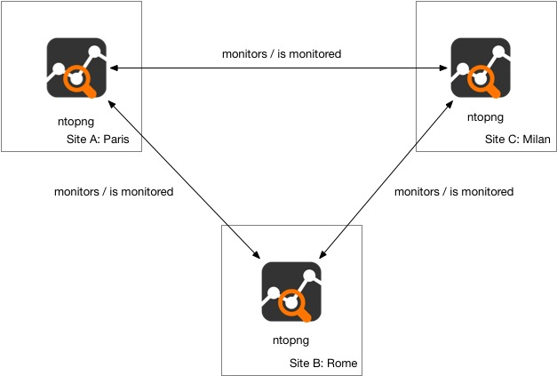
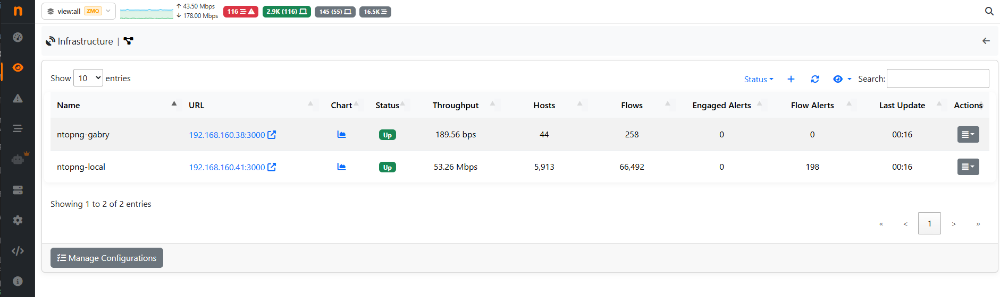
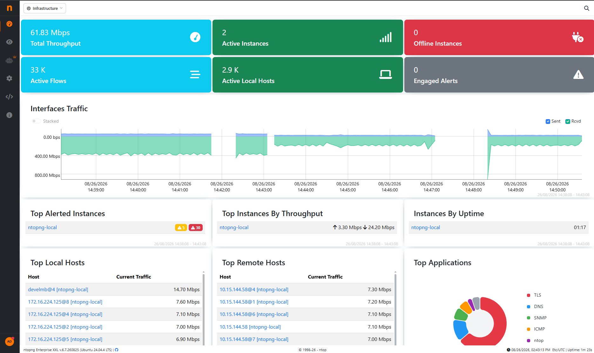

Мониторинг инфраструктуры
Примечание
Требуется лицензия Enterprise L ntopng или выше.
ntopng Предприятие имеет возможность отслеживать другие экземпляры ntopng, находясь в одной и той же локальной сети или физически/географически распределенные. Эта возможность, также называемая Мониторинг инфраструктуры, обеспечивает оперативную видимость состояния экземпляров ntopng, а также сети, соединяющей их.
Используя эту возможность, можно получить полную видимость инфраструктуры с несколькими запущенными экземплярами, при этом экземпляр ntopng постоянно контролирует другие экземпляры в иерархии или в ячеистой топологии.
Например, на следующем изображении показан мониторинг инфраструктуры с тремя экземплярами в Милане, Риме и Париже соответственно.

Мониторинг инфраструктуры
Чтобы просмотреть состояние и состояние других экземпляров ntopng, перейдите к Мониторинг -> Инфраструктура. На этой странице можно проверить отслеживаемые в данный момент инфраструктуры и добавить новые экземпляры ntopng для мониторинга.

Мониторинг инфраструктуры
При мониторинге других экземпляров ntopng, ntopng показывает пользователям различную информацию об удаленных экземплярах:
Статус: представляет состояние удаленного экземпляра (вверх или вниз).
Пропускная способность: представляет пропускную способность удаленного экземпляра.
Хосты: представляет количество хостов, активных в данный момент на удаленном экземпляре.
Потоки: представляет количество потоков, активных в данный момент на удаленном экземпляре.
Включенные оповещения: представляет количество активных в данный момент оповещений на удаленном экземпляре.
Оповещения о потоке: представляет количество предупреждений о потоке, которые в настоящее время находятся на удаленном экземпляре.
Можно добавить экземпляр для мониторинга, нажав кнопку + символ над таблицей.
Примечание
пользователям нужен токен аутентификации пользователя удаленного ntopng для мониторинга удаленного экземпляра, установите флажок здесь.
Этот сообщение в блоге подробно описывает эту возможность.
Панель управления инфраструктурой
После настройки мониторинга инфраструктуры путем добавления других экземпляров ntopng к отслеживаемым экземплярам в верхней части страницы появляется новое раскрывающееся меню. Это меню, помимо того, что позволяет пользователю переходить к другим экземплярам, включает в себя пункт «Информационная панель инфраструктуры». Эта информационная панель позволяет пользователям эффективно контролировать несколько регионов в едином интерфейсе, одновременно обеспечивая при необходимости детальную детализацию конкретных регионов, что дает возможность:
Мониторинг в режиме реального времени всех экземпляров ntopng, развернутых в разных местах.
Мониторинг общей пропускной способности всей распределенной сети, включая трафик каждого протокола приложения.
Просмотр активных оповещений по регионам
Определите лучшие хосты во всей сети
Анализировать агрегированные и региональные показатели эффективности

Панель управления инфраструктурой